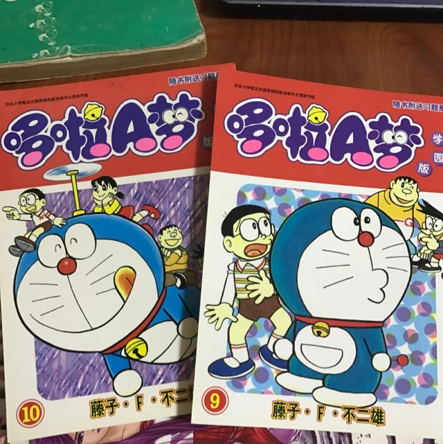
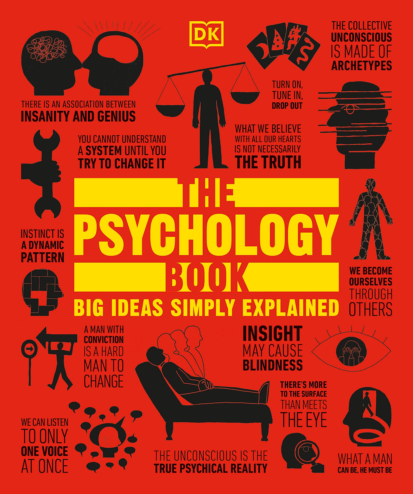

A comic book is a bound collection of strips, each of which typically tells a single story or a gag (joke) in a few panels or else a segment of a continuous story. Most of the more popular newspaper comic strips eventually are collected over a varying period of time and published in book form.
 Click the link below to see our products!Detective fiction is a genre of writing where a detective works to solve a crime. The audience is challenged to solve the crime by the clues provided before the detective reveals the answer at the end of the novel.
Click the link below to see our productsPsychology can be an extremely fascinating subject, even if it’s hard to remember that when you’re surrounded by a pile of textbooks preparing for exams.
 Click the link below to see our productsUse reference books (also called reference or background sources, or resources) to get quick specific facts or information or an overview of a subject. Some examples of reference sources are: dictionaries, encyclopedias, bibliographies, almanacs, directories, atlases, and handbooks. These can be online or in print.
Click the link below to see our products